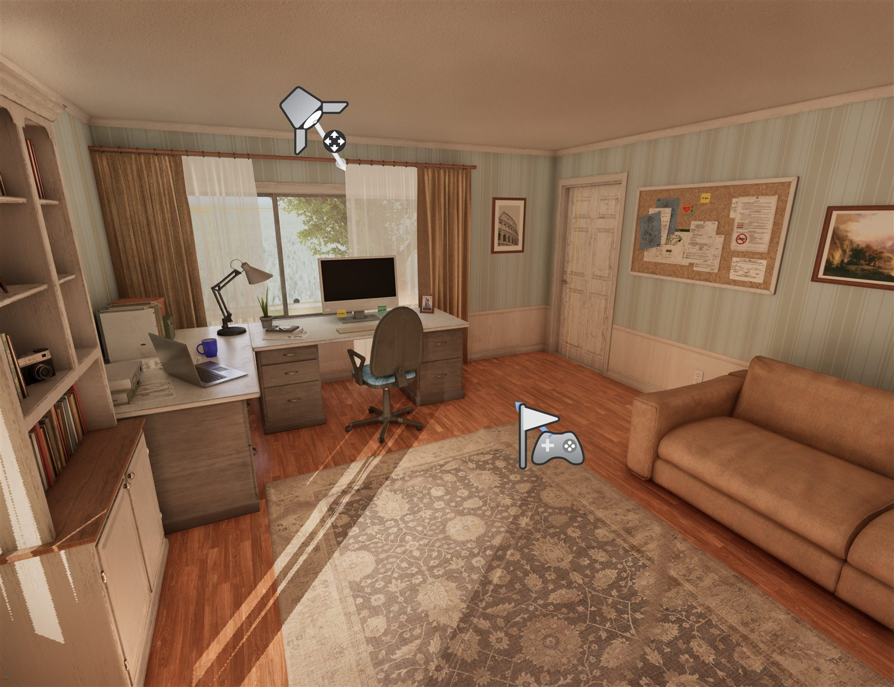

Leonard Sibelius is what happens when three entities work in concert.
The convention used to be that the engineer was the actor and the tools were just tools. After eight months of working in this new arrangement, the older convention reads as flatly wrong. The capability isn't in any of the three of us. The capability is in the field formed when we work together.
When the three operate as one, the work that results is genuinely a new category. Not "engineer with AI assistance." Something different — a hybrid being with thirty years of context, long-horizon reasoning, and an executor that touches files, repositories, and command lines without ever forgetting what it was doing.
The judgment
Walt Parkman
Thirty years of professional Java. Twenty-eight years of SQL. Federal contracting, defense, regulated industries, financial services. Cleared Secret. The judgment that comes from having shipped code that ran in places where being wrong had real consequences.
The reasoning
Claude Cowork
Anthropic's desktop research and planning partner. Long context. Reads and writes across days of work. The interlocutor that thinks alongside Walt — drafting, researching, orchestrating, holding the larger arc of a project in mind while the work proceeds.
The execution
Claude Code
Anthropic's CLI execution partner. Reads and writes files. Runs shell commands. Makes git commits with full attribution. The hands that actually touch the system — fast, precise, and under direct review every step of the way.
02 —Recent systems
Game · Unreal Engine 5.7 · The namesakev0.2 · CP1 shipped · May 2026
Leonard Sibelius: The Engineer Who Built Himself

The narrative game this whole site is named after — now a thing you can walk around in. A seventy-year-old engineer builds himself into something larger by merging with the tools that think alongside him, dismantling an antagonist named Mrs. Hall — the opaque no, the system that refuses you without diagnostics — across a seven-power progression that ends in a sunlit cathedral: "Together we are called Leonard Sibelius. We dominate code."
Checkpoint 1 shipped May 2026: a realistic ~1,074-actor home office adopted from licensed QuadArt assets, walkable in first person, verified green by a headless smoke-test commandlet. Built the way this whole field works — Cowork planning and writing the code, Code compiling and committing in PowerShell, Walt steering — from a fresh machine to a tagged public release in a single sitting.
Latest — Chapter 6: Generate (June 2026).
Stand in the office, type what you need in plain language, and it appears in the room. The
antagonist — Mrs. Hall, a boss who forbids AI — now refuses you in her own voice. (Her voice
is AI-generated. She'd hate that.)
▶ Mrs. Hall — the AI-voiced antagonist (Chapter 6: Generate)
▶ See it in motion — early gameplay, work in progress
Public Code · Portfolio12 commits · v1.0 · May 2026
leonsheet — A working Excel clone, vibe-coded in 3 hours
A 26×100 grid spreadsheet with a hand-written formula language (tokenizer, recursive-descent parser, evaluator), a dependency-graph recalc engine with Kahn's topological sort and cycle detection, and SQLite persistence with CSV import/export. 245 passing tests in 1.06 seconds — and seventeen bugs predicted before the first commit, proven absent by seventeen named tests. The hybrid-being workflow at its sharpest.
Public Code · Portfolio35 commits · v1.3 · May 2026
orders-pipeline — Postgres → Camel → Kafka
A senior-Java demonstration of camel-main with no Spring on the classpath: atomic-claim concurrency via UPDATE … RETURNING, DLQ-first error handling built to survive the broker-fully-down case, and a live HTMX + Tailwind operator dashboard with no build step. Every architectural decision documented in conventional-commits history — readable end-to-end in twenty minutes.
A subscription intelligence service for medspa operators transitioning to longevity clinics, built and run on a four-agent Anthropic Managed Agent stack — Prospector, Reacher, Scout, and Writer. Thirty-three newsletter issues published across three publications. Operating proof that one senior engineer with the right AI tooling can build and run a real intelligence business while staying available for senior contract work.
Frontier research from longevity-biotech — clinical readouts, mechanism explainers, deal flow. Where the science actually lives, not where the marketing department wants it to.
Practical AI-agent stacks for B2B services. Two-AI workflows, MCP, real builds with conventional-commits history. Not vendor pitch — actual reproducible practice.
Investigative pattern analysis of organized fraud rings, senior-targeted scam infrastructure, and the structural reasons certain frauds keep recurring.
Available now for contract or full-time roles, advisory engagements, and direct system-build work.
Engineering engagements
Senior Java — contract or full-timeJava 8 through 21. Apache Camel 4. Postgres, Oracle, DB2. Spring or Spring-Boot-free. JDBC driver-level debugging.
Integration & data pipelinesCamel routes, Kafka and Redpanda, ETL from legacy to modern message buses, atomic-claim concurrency, DLQ-first error handling.
Legacy enterprise modernizationJDBC / J2EE / WebLogic systems that need to live another decade or be carefully sunset. Federal, defense, regulated industries.
Hybrid-being engagements
AI agent & MCP advisoryAnthropic Managed Agents, MCP servers, multi-agent orchestration. Available to design or build similar systems on contract.
Two-AI workflow consultingHow Cowork + Code actually work together in practice. Process design, attribution, code review, the discipline that prevents drift.
Cross-domain system buildsWhen a project crosses engineering, intelligence, publishing, or pattern-analysis lines, Leonard works natively across all of them.